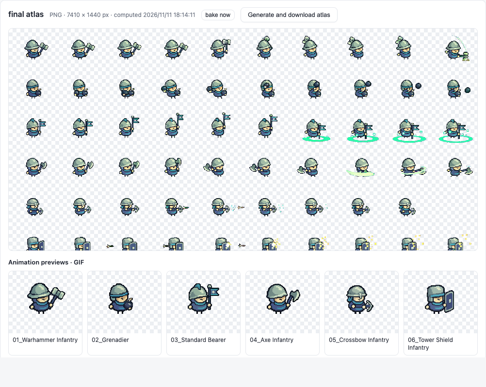

Warhammer Infantry


SpriteFrame is included in the Pixel Asset Workshop repository. It crops and keys each unit, lets you review the animation frame by frame, and exports PNGs, atlases and GIFs.
The project ZIP includes SpriteFrame, the sample MP4 and its crop layout. You can download it without a GitHub account.
brew install ffmpeg. On Ubuntu or Debian, run sudo apt install python3 python3-venv ffmpeg and check that python3 --version reports 3.11 or newer.pixel-asset-workshop-main folder. Run:
sh workbench/setup.sh
sh workbench/start.sh

Each pair uses the same 12 frames from the cleaned PNG sequence. Read the PNG left to right, then top to bottom. The GIF shows the selected poses at 200 ms per frame.
Use, modify or share these original sheets and GIFs in personal or commercial projects. Attribution is optional. CC0 1.0 asset terms ↗